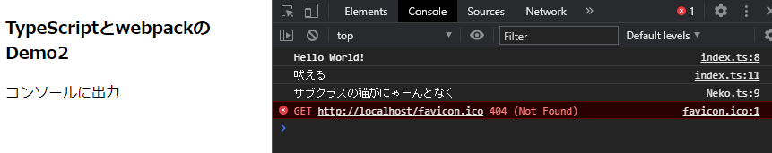
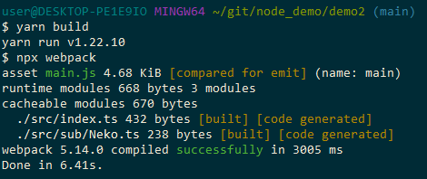

通常のJavaScript（ES6）と異なる点に重きをおいた特徴
問題点(2021年1月時点:バージョンVersion 4.1.3)
一部のコードにcommonjsに準拠した書き方、es2015に準拠した書き方があり混乱をまねく。 外部クラスファイルを扱う際、importやrequereを使うようだがcommonjsやらes2015やらで書き方が異なるうえ、 exportsが使えない、requireが使えないなどエラーが頻発する。 webpackなどでファイルを一つにまとめる方法が現在主流か？手順
前提条件としてnpmコマンドが使えるようになっていること。$ npm install -g typescript
$ tsc -V Version 4.1.3
cd ~/git/hello_project
$ tsc --init
test.ts
class HelloWorld
{
m_big_buta: string = '大きなブタ2'; // メンバ
/** コンストラクタ
*/
constructor(str1: string){
console.log(str1);
}
// publicメソッド
public bark()
{
let value1: number = 333; // 数値型の宣言
let str1: string = 'こんにちは世界！'; // 文字列型の宣言
console.log(value1);
console.log(str1);
this._working(); // privateメソッドの呼び出し
console.log(this.m_big_buta); // メンバを呼び出してみる
}
// privateメソッド
private _working(){
console.log('プライベートで猫が歩く');
}
}
var helloWorld = new HelloWorld("Hello World!");
helloWorld.bark();
$tsc test.ts
<html>
<head>
<script src="test.js"></script>
</head>
<body>
出力はコンソールにて
</body>
</html>
事前条件
TypeScriptの開発環境 （webpackでコンパイルする環境）
$cd ~/git/node_demo/demo2
npm initいくつか質問が聞かれるので適当に入力。
$ npm install webpack
$ npm install webpack-cli
$ npm install typescript
$ npm install ts-loader
mkdir src
mkdir dist
webpack.config.js
module.exports = {
// 本番環境ならるproduction（最適化される）、開発環境ならdevelopment(デバッグしやすい)。
mode: 'development',
// エントリーポイント：スタートファイル
entry: './src/index.ts',
module: {
rules: [
{
test: /\.ts$/, // コンパイル対象ファイルの拡張子
use: 'ts-loader', // コンパイルパッケージを指定
},
],
},
// ここで指定した拡張子は、import文で拡張子を省略できる。
resolve: {
extensions: [
'.ts', '.js',
],
},
};
tsconfig.json
{
"compilerOptions": {
"sourceMap": true,
"target": "es5",
"module": "es2015"
}
}
$ npx webpackwebpackでsrcに存在するtsファイル群を一つにまとめ、distフォルダにmain.jsとして出力する。
<!DOCTYPE html>
<html lang="ja">
<head>
<meta charset="UTF-8">
<title>TypeScriptとwebpackのDemo2</title>
<script src="dist/main.js"></script>
</head>
<body>
<h3>TypeScriptとwebpackのDemo2</h3>
コンソールに出力
</body>
</html>
表示画面
おまけ
「yarn build」コマンドでコンパイルできるよう、package.jsonに設定を追加
{
"name": "typescript_demo2",
"version": "1.0.0",
"description": "TypeScriptの開発環境構築その２",
"main": "index.js",
"scripts": {
"build": "npx webpack",
"test": "echo \"Hello World!\" && exit 1"
},
"repository": {
"type": "git",
"url": "git+https://github.com/amaraimusi/node_demo.git"
},
"author": "kenji uehara",
"license": "ISC",
"bugs": {
"url": "https://github.com/amaraimusi/node_demo/issues"
},
"homepage": "https://github.com/amaraimusi/node_demo#readme",
"dependencies": {
"ts-loader": "^8.0.14",
"typescript": "^4.1.3",
"webpack": "^5.14.0",
"webpack-cli": "^4.3.1"
}
}
実行例
